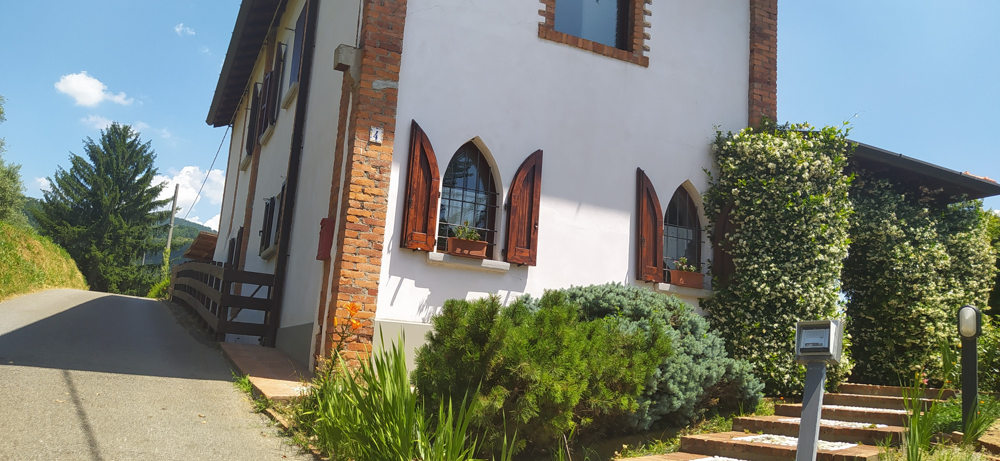
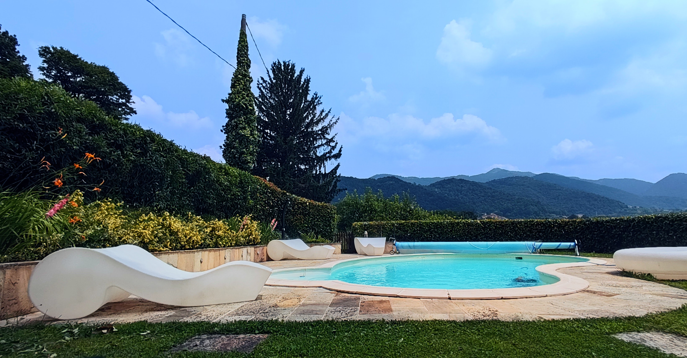
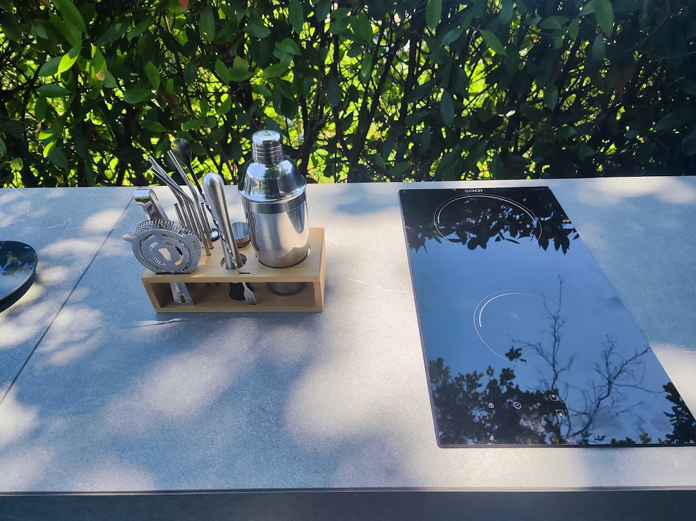
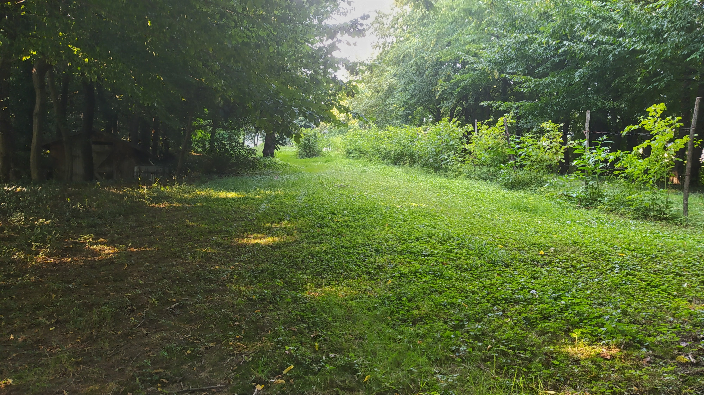
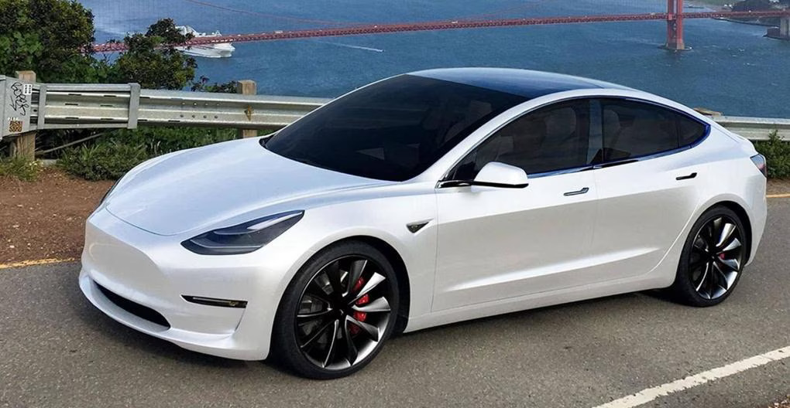
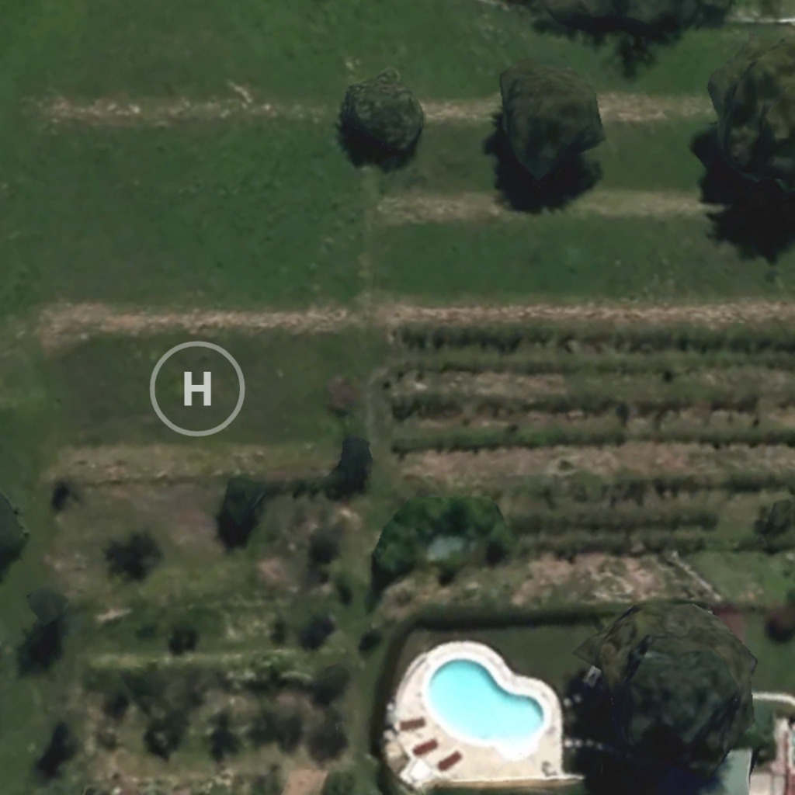
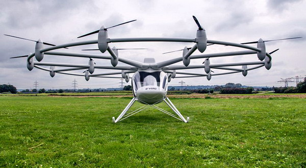

Accesso
Strada privata con cancello nero
Suona il campanello Vecchi-Bignamini: il cancello si apre in automatico. Poi sali fino alla seconda casa bianca sulla destra.
Apri subito il GPSCome raggiungerci
Accesso e parcheggio
Accesso
Suona il campanello Vecchi-Bignamini: il cancello si apre in automatico. Poi sali fino alla seconda casa bianca sulla destra.
Apri subito il GPSParcheggio
Hai due posti adiacenti a Villa Duna e, se serve, numerosi parcheggi aggiuntivi lungo l'area boschiva.
Mappa interattiva
Percorso visivo





Mobilità elettrica ed eliporto
Villa Duna è molto sensibile al tema della sostenibilità ambientale e saremo molto lieti di ricevere ospiti con un veicolo o velivolo elettrico così da ridurre le emissioni acustiche e atmosferiche*. Disponiamo di un impianto fotovoltaico (12 kWp e 30 kWh di accumulo). E’ inoltre presente una colonnina per la ricarica di veicoli da 11 kW, così da aumentare il comfort dei nostri ospiti.
NB: la colonnina è solo per auto, non provate ad attaccare il vostro elicottero 😊

Villa Duna dispone di un eliporto privato presente nelle ripe sottostanti alla piscina, si accede al giardino principale da un cancello in legno, passando tra filari di lamponi e frutti di bosco.
L’eliporto Villa Duna è ubicato alle seguenti coordinate:
45°44’43.9″N 9°37’18.4″E


Info rapide